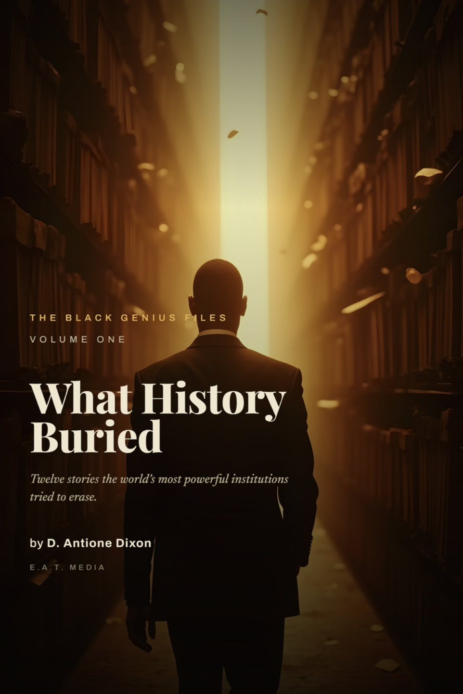

For history readers
Explore case files including Mansa Musa, Benjamin Banneker, Katherine Johnson, Harriet Tubman, and Robert Smalls. Start with a familiar name, then examine the record around it.
A Kwanzaa book gift for adults
Some gifts fill a moment. A book can become part of the family record.
What History Buried — The Black Genius Files, Vol. 1 by D. Antione Dixon brings together twelve case files on Black history, recovered records, and the people whose work deserves a lasting place in the family library.

Books have a specific place in Kwanzaa gift giving. The official Kwanzaa guidance describes gifts as centered mainly on children and including a book and a heritage symbol, emphasizing learning, tradition, and history. An adult Black history book can also offer a household something to read, discuss, and keep.
This is an invitation to bring history into your celebration, rather than a claim that this book is an official Kwanzaa text. Choose an age-appropriate book for children; What History Buried is positioned here for adult readers and adult-led family discussion.
Cultural reference: Official Kwanzaa Website: greetings and gifts.
Explore case files including Mansa Musa, Benjamin Banneker, Katherine Johnson, Harriet Tubman, and Robert Smalls. Start with a familiar name, then examine the record around it.
Give a physical book that can stay within reach and return to the table for conversation. Add your own inscription explaining why you chose it.
Choose a case file, read it together, and ask what the sources reveal. The free chapter lets your group explore the approach before choosing a format.
These original discussion prompts use the seven principles as a reading companion. They are suggestions for your celebration, not claims that the published book contains a seven-principle curriculum.
Principle reference: Official Kwanzaa Website: Nguzo Saba.
Choose a format on Amazon. Current prices, availability, and delivery estimates appear at the retailer. For a physical gift, check the delivery estimate for the recipient's address before ordering.
No special bundle is required. Give the book on its own, or pair it with a personal note and a heritage symbol meaningful to your household.
No. It is a Black history book offered as a gift for Kwanzaa. For the holiday's history and practices, consult the official Kwanzaa resources linked above.
No. This page recommends it for adults. Adults should preview the material before sharing it with younger readers.
Yes. Request the free chapter or explore the case files on the official book site.
Check Amazon's current delivery estimate at checkout. This site does not guarantee a holiday delivery date.